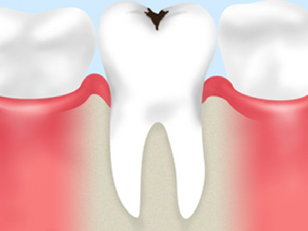
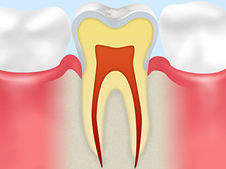
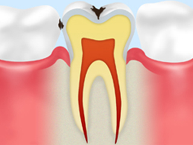
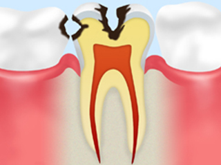
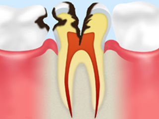
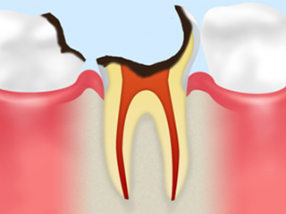
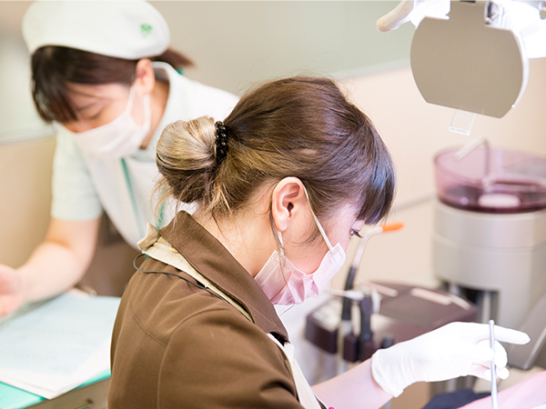

- ホーム
- むし歯の治療と予防
むし歯を知り、むし歯を防ぐ
お口の中で起こる病気の代表格である「むし歯」は、初期段階では痛みなどの自覚症状がほとんどありません。自覚症状があまりないまま進むため、痛みが気になりはじめるころには進行してしまっていることもあり注意が必要です。
むし歯対策は、最初からむし歯にならないよう予防することがポイントです。早めに予防・治療するためにも、むし歯について詳しく知っておきましょう。
むし歯とはどんな病気？
|  | むし歯は菌によって歯が溶かされてしまう感染症で、小さなお子様から年配の方まで幅広い年齢層の方が発症します。むし歯は初期段階では痛みなどの自覚症状がほとんどないため、痛みが気になりはじめるころには大きく進行してしまっていることも少なくありません。早めに予防・治療するためにも、まずは虫歯について知っておきましょう。 |
むし歯の原因
むし歯は、以下のような原因が重なることで発症します。
| 原因菌 | むし歯の原因菌が糖分をエサに歯垢をつくり、歯垢から酸をつくることで歯を溶かします。 |
|---|---|
| 歯・唾液の質 | 歯の質が酸に弱いとむし歯になりやすくなります。また、唾液の量が少ない場合もむし歯になりやすくなります。 |
| 糖分 | 食後のお口に残った糖分を栄養源として細菌が歯を溶かす酸を作るため、糖分が多く残っているほどむし歯は進行します。 |
むし歯の進行段階と治療方法
※表は左右にスクロールして確認することができます。
| 進行段階 | 症状 | 治療法 |
|---|---|---|
|
C0  |
歯の表面が菌によって着色している状態です。まだ穴はあいていないため、痛みはありません。 | 歯科医の定期的な検査の上で、適切なブラッシングを徹底して経過観察します。 |
|
C1  |
歯のエナメル質だけが原因菌によってむし歯になっている状態です。歯の表面がザラついたり、シミや黒い点ができますが痛みはありません。冷たいものを食べるとしみることがあります。 | むし歯に冒された部分を削って、詰め物で治療します。 |
|
C2  |
歯のエナメル質をやぶり、むし歯菌による穴が深くなって歯の内部にある象牙質まで進行した状態です。冷たいものや甘いものを食べるとしみるようになります。また食べ物を噛んだ時などに痛みを感じるようになります。 | むし歯に冒された部分を削り、歯髄を保護して詰め物で治療します。 |
|
C3  |
むし歯菌が歯髄という歯の神経にまで進行してしまった状態です。 穴が深く大きくなるため、常に痛むようになります。 |
神経を除去し、神経が入っていた管（根管）の内部を消毒して薬剤を詰める治療を行います。 |
|
C4  |
むし歯がもっとも進行した状態です。むし歯菌によって歯の大部分が溶かされて歯根まで冒され、歯髄は腐敗しています。 そのため顎の骨までやられると痛みが出たり腫れたりします。 |
通常、抜歯が必要ですが根の長さが十分ある場合は抜歯をせず、根管治療を行います。抜歯を行う場合は入れ歯やブリッジ、インプラントなどで失った歯の機能を補います。 |
｢痛くないむし歯治療｣を行うために
ユミデンタルオフィスでは、患者様がリラックスした状態でむし歯治療を受けていただけるように、「痛くない・怖くない」治療に取り組んでいます。
| 麻酔 | 麻酔注射の痛みが気になる方のために、事前にジェル状の麻酔を塗布してから注射を行います。薬剤を注入する際にも、痛みを感じにくいスピードで行うため安心です。 |
|---|---|
| 音の低減 | 治療機器の「キーン」という音に苦手意識を持っている方も多いのではないでしょうか。当院では最新のタービンや5倍速コントラを使用することで治療時の音を低減しています。 |
| レーザー | 患部にレーザーを照射することで痛みを感じにくくするほか、歯質を強化することができます。ごく初期のむし歯の治療も麻酔なしで可能です。 |
むし歯予防には習慣が重要

お口の病気であるだけに、むし歯予防には食生活が大きな役割を担っています。特に以下のような習慣には気を付けましょう。
| 間食 | 食事をするとお口の中が酸性に傾いてむし歯になりやすくなります。間食は時間と回数を決め、ダラダラ食べ続けることがないようにしいましょう。 |
|---|---|
| 咀嚼 | 唾液の量が少ないとむし歯になりやすくなります。食事の際にはしっかりと咀嚼することで唾液が出やすくなり、むし歯を防ぐことができます。 |
| ブラッシング | 就寝時には唾液の分泌が減るためむし歯になりやすい時間帯です。特に就寝前のブラッシングは丁寧に行っておきましょう。 |
PICK UP！ 歯にはどんな役割があるの？
歯は、食事の際に食べ物をかみ砕くだけでなく、歯ごたえなどを感じて味覚を豊かにしたり、発音をサポートしたりとさまざまな役割を持っています。そんな役割を持つ歯だからこそ、1本失っただけでも体に大きな影響を与えてしまいます。
歯はそれぞれが支え合っているため、1本抜けると周りの歯並びまで乱れてしまったり、奥歯が1本抜けると咀嚼がうまくできなくなって消化器官に負担がかかったりと、無視することはできません。
健康な生活を維持するためには、歯の健康を維持することが重要です。歯はたくさんありますが、その1本1本がしっかりと役割を持っているということを意識してケアに取り組みましょう。
根管治療
歯の中には歯髄という組織があり、根の先の方で歯を支えている骨の中の神経や血管とつながっています。
この歯髄が虫歯や外傷で細菌に感染すると歯の痛みや腫れを生じてしまいます。その場合、歯髄を除去する 治療（よく「神経を抜く」と言われる治療）を根管治療と言います。
また以前に歯髄を除去した歯の根が、再感染を起こすと根の先に膿を持ってしまいます。感染した根管内を きれいにお掃除し、お薬で細菌を減らす治療を感染根管治療と言います。
こんな場合は根管治療が必要です
むし歯が歯の表面だけに感染している場合は歯を削る治療でも対応できますが、歯の神経（歯髄）にまで達していた場合や、歯の根が病気になっている場合などは、根管治療を行うことで菌に汚染された神経を除去する必要が出てきます。
根管の中にある歯髄は神経や血管から歯に栄養を届ける役目を持っています。そのため、歯髄がなくなってしまうと歯が弱って寿命が短くなってしまうのです。できる限り、根管治療になる前に治療を行い、ダメージを減らしましょう。
精度の高い根管治療を行っています
昔、他院で根管治療を行った歯が再度膿を持つなど何かしらの症状が再発し、再治療を行う頻度は決して少なくはありません。
根管治療においては直径１mm以下の細い根管内をいかに綺麗に清掃できるか、歯科医師のスキルにかかっています。 きちんと根管治療を行うことで、腫れや痛みなどの症状が改善します。
根管治療をしっかりと治さないままですと、 再治療を余儀なくされたり、修復治療を行ってもまた外さないといけなくなってしまいます。
当院では通常の保険治療における根管治療でも、治療結果が良好で経過を見ている歯がほとんどです。 見えない部分だからこそしっかりとした治療を行い、治癒した経過も年に１度はレントゲンを撮影し、患者さんに術前術後の 比較を見ていただいています。
症例
01
| 年齢 | |
|---|---|
| 性別 | |
| 住所 | |
| 主訴/ニーズ | |
| 治療期間 | |
| 治療内容 | |
| 費用 | |
| 院長コメント & 治療のリスク |